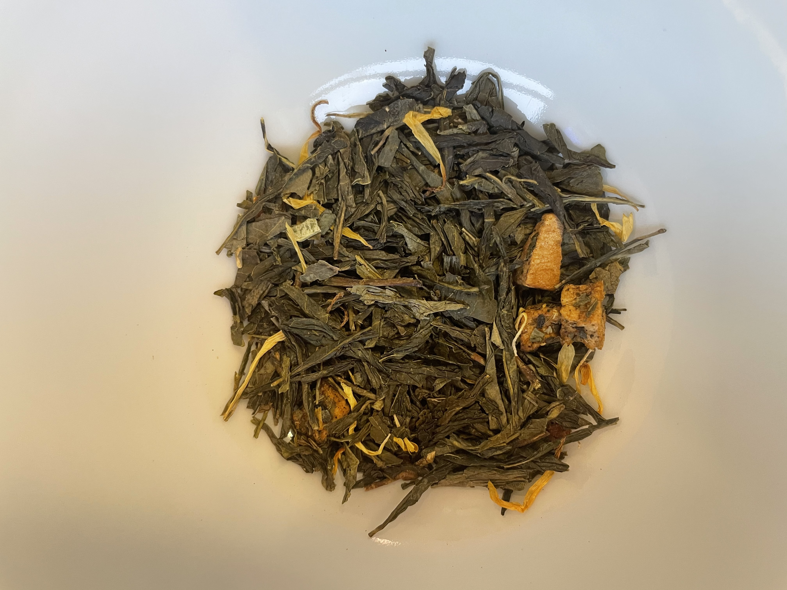

last experienced: 12.23.2021
My mom took me to her favorite cafe in Hawaii the first day I arrived. I chose this tropical green tea made specifically for the tea house. Just as the name describes, the scent and flavor are very tropical. While it smells fresh like green tea, there are hints of pineapple and coconut that specifically remind me of warm places. When I find a cafe like this and a drink I like, I often make it a part of my routine. So every few days I would come here and order the same refreshing tea to cool me down in the 85 degree weather. It also reminds me of extremely hard times when I dealt with grief and loss. My childhood dog suddenly grew ill during this time and my source of comfort was going to get my tea alone. The car drive alone to the tea house made the tea an even more complete experience.